Vanderbilt · Learning Series · ATD facilitator guide · print edition
Presentation & Public Speaking, the facilitator guide

Run of show
| Screen | Full (min) | Core (min) |
|---|---|---|
| Welcome / QR | 3 | 2 |
| Objectives | 2 | 1 |
| The Chancellor's charge | 3 | — |
| Agenda | 1 | — |
| 01 · The myth & the case | 8 | 5 |
| Manifesto | 1 | — |
| 02 · Executive presence | 8 | 4 |
| 03 · The Big Idea | 12 | 9 |
| 04 · The Sparkline | 9 | 6 |
| 05 · SCQA, for the executive room | 10 | 7 |
| 06 · Delivery (live round) | 14 | 10 |
| 07 · The tough question | 8 | 5 |
| Recap quiz | 4 | 4 |
| Capstone · The rebuild | 6 | 5 |
| Glossary | 1 | — |
| Closing · commitment | 3 | 2 |
| Total | 93 | 60 |
Audience
Managers, senior ICs, and leaders who present to teams, stakeholders, or executive and board audiences. 8 to 20 works best — every participant speaks out loud at least once with feedback, and the live round is the session's centerpiece. Larger rooms split the live round into table groups.
Room setup
Projector + presenter device; learners on their own devices via the Welcome-slide QR; a visible timer or stopwatch for the live round (60–90 seconds per speaker, strictly enforced). Virtual: breakouts of 3–4 for the storyboard activity; the live round runs on main stage with cameras on. Pre-work matters here more than any other course: participants bring one REAL upcoming presentation topic so drafting time isn't spent brainstorming.
Materials
- Projector or large display and the facilitator link open (this edition)
- Facilitator laptop with arrow keys or clicker; all notifications off
- Learner devices (BYOD) joining via the welcome-slide QR
- A visible timer or stopwatch for the live delivery round — strict timing IS the exercise
- Sticky notes (or a shared doc, virtual) for the Sparkline/SCQA storyboard activity
- A few printed cheat sheets (cheatsheet.html) for anyone without a device
- Printed rebuild worksheets (worksheet.html) as the no-device and projector-failure fallback
- Whiteboard or flip chart for the parking lot and live Big Idea rewrites
A week before
- Read this guide end to end, then run BOTH editions start to finish, doing every exercise — including drafting your own Big Idea for a real talk. You'll model it in Section 03, and a facilitator with a real example is worth three slides of theory.
- Send the pre-work invite (template on this page) with the calendar invite: bring one real upcoming presentation topic. This single ask doubles the session's transfer.
- Decide your path now: Full (90-minute slot) or Core (60). On Core, decide which structure section gets full depth — SCQA for leadership-heavy rooms, Sparkline for change-communication rooms.
- Cue and trim both videos: Duarte TEDxEast (play 8–10 minutes of 18) and Anderson's TED talk (8 minutes). Pick your trim points and note them.
- Rehearse your own opening line for this session out loud. You are about to teach opening lines; the room will notice yours.
The day before
- Test the projector with the facilitator link; confirm the notes rail is readable from where you'll stand.
- Scan the welcome QR from the back of the room with your own phone; it must land on the learner edition.
- Test both videos start-to-trim so nothing surprises the room; check audio levels.
- Print 5 to 10 cheat sheets and rebuild worksheets; stage the sticky notes and the timer.
- Re-read the tough-questions bank; say the 'my leadership only wants bullet points' response out loud once.
30 minutes before
- Welcome slide up as people arrive; it does the enrolling for you.
- Close every other tab and app; silence the machine.
- Test arrow-key navigation and one interaction (run a round of Guess the Number, open the SCQA lab).
- Set up the timer where the whole room can see it.
- Write 'PARKING LOT' on the whiteboard, and remember the frame: this room doesn't fear speaking — they've just never been given the architecture.
When things go sideways
If Projector or the site fails mid-session: Teach from the printed cheat sheet: the Big Idea formula, both structures, the delivery rules, and the bridge all work on a whiteboard. The live round and rapid fire never needed a screen; the capstone moves to the printed worksheet.
If Learner devices can't join (wifi/filters): Run facilitator-only: the trainers play well on the projector with the room voting A/B/C by hands; Big Idea drafting and the capstone move to paper (the worksheet covers both). You lose typing, not learning.
If You're 10+ minutes behind by the delivery section (06): Declare the Core path silently: cut the remaining video (assign it), run the live round at 60 seconds flat per speaker, and compress the rapid fire to two volunteers. Never cut the live round entirely or the capstone — a presentation course where nobody presented is a contradiction the room will remember.
If Participants didn't do the pre-work and have no real presentation to draft: Give the universal fallback prompt: 'pitch your leadership on one change that would make your team's work week better.' Everyone has one. It drafts, storyboards, and survives the rapid fire exactly like a real topic — and often becomes one.
If Someone freezes or visibly panics in the live round: Protect them without excusing them: 'Take a breath — start with just the Big Idea sentence, that's the whole rep.' If they can't, let them pass and re-offer at the end; most take the second chance when the pressure of the queue is gone. Never force it, never make it a moment. AMA's principle applies to facilitation too: no one cares about the stumble but them.
If A senior leader in the room dominates feedback or turns notes into speeches: Re-anchor the rule warmly: 'One specific note per speaker, framework-anchored — that discipline is half the exercise.' Deputize them as the timer-keeper or the rapid-fire executive; the role channels the energy and they're usually excellent at it.
Tough questions, ready answers
Q: My leadership only wants bullet points and dense slides. Won't 'one idea per slide' look unprepared?
Separate the two artifacts: the PRESENTATION is what you say with minimal slides behind it; the DOCUMENT is the dense leave-behind they can study. Gallo's rule applies to the first, not the second. Minto's Pyramid was literally built for the document. Teams that split deck-as-teleprompter from deck-as-reference find executives read the document and remember the talk — right now yours are getting neither.
Q: Isn't leading with the answer risky? What if they reject it before I've made my case?
The suspense strategy carries the bigger risk: an executive interrupting minute six with 'what are you asking for?' — and now you're improvising your ask under pressure. Leading with the answer doesn't skip the case; it frames every supporting point as evidence for a decision the room can already see. If the answer is genuinely explosive, SCQA still helps: state the Question crisply and signal the answer is coming in one minute, not twenty.
Q: The Sparkline feels theatrical for a budget review. Is this TED stuff really for internal meetings?
Match the tool to the job — that's Section 05's whole point. A routine budget review wants SCQA, maybe just the Answer and support. But the moment a presentation asks people to CHANGE — new process, reorg, strategy shift — you're in persuasion territory, and the What Is/What Could Be gap is the mechanism that moves people. The skill isn't using the Sparkline everywhere; it's noticing which meetings are secretly change talks.
Q: I hate the sound of my own opening line. How do I know if it's good?
Test it on the three failure modes from today: is it an apology? A warm-up ('so, um, thanks for having me, a bit of background…')? A topic announcement ('today I'll talk about Q3')? If it's none of those and it delivers either stakes or the answer inside the first sentence, it's good enough to rehearse — and rehearsal, not redrafting, is what makes it feel natural. The tenth time out loud sounds nothing like the first.
Q: What about nerves? You said fear isn't the barrier, but my hands still shake.
The Chapman data says fear isn't the TOP barrier for most people — not that nerves aren't real. Two honest answers: structure is itself the best anxiolytic (most speaking panic is really 'I don't know what comes next,' and a storyboard fixes that), and arousal reframing works — 'excited AND nervous' outperforms 'calm down' in performance research. Rehearse out loud, know your first sentence cold, and let the hands shake; the room can't see them from four feet away.
Q: Can AI just build my presentation now?
AI drafts well and thinks poorly on your behalf. It can propose Sparkline beats or an SCQA skeleton in seconds — genuinely useful — but the Big Idea is a point of view, and outsourcing your point of view is how you end up presenting a talk you don't believe in front of people who can tell. Use it the way we used the lab today: generate options, then YOU choose and sharpen. If your team took Start Smarter or Working Smarter, this is the human-checkpoint pattern applied to your own deck.
Copy-paste templates
Pre-work invite (paste into the calendar invite)
Subject: Before our Presentation & Public Speaking session. One thing to bring: a real presentation you'll give in the next month or two — a budget review, a project pitch, a leadership update, anything with real stakes. You'll rebuild it during the session using the frameworks behind the world's best talks, and you'll leave with the opening line written. No slides needed — just the topic. Everyone speaks at least once; nobody presents a full deck.
7-day pulse (send one week after)
Subject: One week later — did the talk happen? Three quick lines, reply whenever: 1) Did you deliver (or rehearse) the presentation you rebuilt? 2) Which structure did you use — Sparkline or SCQA — and did it hold? 3) Did anyone react to your opening line? Replies come to me only. Talk not scheduled yet? The rebuild card still works; this note is your nudge to book the rehearsal.
30/60/90-day structure check (send monthly)
Subject: The structure check. Two questions: 1) Have you used the Big Idea, Sparkline, or SCQA on a presentation since the session? Which one, and for what room? 2) Managers: in the decks you've reviewed this month, are you seeing fewer bullet walls and more answer-first openings? Reply with a line each. The count of structure-led presentations is the metric the session was designed around.
After the session
Immediately: capture the exit commitments (Big Idea sentence, structure chosen, date of the real talk). Seven days out, send the pulse: 'Did you deliver it? Which structure? Did anyone react to your opening line?' At 30/60/90 days, track self-reported use of Big Idea/Sparkline/SCQA on subsequent presentations, and consider a manager or peer spot-check: are decks shifting from bullet-heavy to story-led, and are presenters opening with the answer in leadership settings?
Welcome / QR Full 3 min · Core 2
Get every learner into the experience on their own device and set the contract: everyone speaks today, drafts stay private, and the work targets a real presentation.
Say
“Welcome. Point your camera at that code before we start. Two things about today. First: everyone in this room speaks out loud at least once — sixty to ninety seconds, with exactly one piece of feedback. I'm telling you now so it's not a surprise later. Second: you brought a real presentation, and by the end of this hour it will have a one-sentence Big Idea, a structure, and a written opening line. What you draft stays on your screen.”
Do
- Have this slide projected as people arrive.
- Point at the QR and get phones up before you say anything else.
- Set the contract early: everyone speaks out loud at least once today, 60 to 90 seconds, with one kind and specific note. Naming it now defuses it.
- Confirm by show of hands who brought a real upcoming presentation; note anyone who didn't (the fallback prompt is in contingencies).
Ask
“Quick poll, hands: think of the best presentation you've ever watched a leader give. Was it the content or the delivery that stuck with you?”
Expect:
- A genuine split — that's fine, both answers serve the session
- Someone says 'both' or 'the confidence'
- A specific story starts to surface; bank it
Respond: Whatever the split: 'Hold that presentation in your head. Today has a framework for each half of what made it work — and by the recap you'll be able to name exactly what they did.'
Validate: 80%+ of the room has the deck open on a device; you know who needs the fallback topic.
Watch for: Visible dread when you announce the live round. Reframe immediately: 60 seconds, one sentence plus an opening line, one note. Reps, not performance.
Transition: “Here's exactly what you'll walk out able to do.”
Core path: Core: one scan prompt, the everyone-speaks contract, move on.
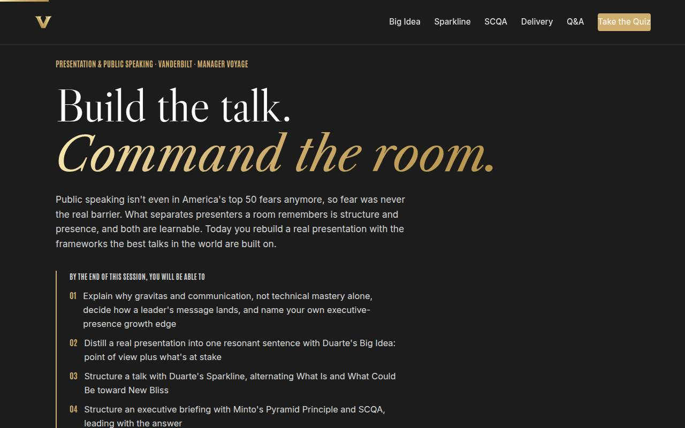
Objectives Full 2 min · Core 1
Set the contract: six capabilities, ending in one real presentation rebuilt with the opening line written word for word.
Say
“Six things by the end: you'll know why gravitas and communication decide how your message lands and which pillar is your growth edge. You'll compress your real presentation into one sentence. You'll structure it two ways — the Sparkline for hearts and minds, SCQA for the executive room — and know when to use each. You'll take a live, timed delivery rep. And you'll practice staying composed when the pointed question comes. It all lands in one artifact: your rebuild card, with the opening line written word for word.”
Do
- Read the six objectives briskly, in plain language.
- Land on the sixth: this session ends with a REAL presentation rebuilt — structure chosen, opening line written.
- Name the sources once for credibility: Duarte, Minto/McKinsey, Anderson (TED), Gallo, the AMA, Hewlett's executive presence research.
- Point at the skills row: this course carries Public Speaking, Storytelling, and Strategic Communication credit in the library.
Validate: Learners can say what the capstone will be (one real presentation rebuilt, opening line written).
Watch for: The montage pulling attention; advance once the objectives have been read.
Transition: “Seven ideas, in order — starting with a myth that needs to die.”
Core path: Core: objectives 2 and 6 out loud; the rest on screen.
The Chancellor's charge Full 3 min · Core skip
Frame presenting as institutional capability: the Chancellor's vision travels only as far as the people who can stand up and make its case.
Say
“One minute on the stakes beyond your next talk. Chancellor Diermeier's vision is one sentence: Vanderbilt will define the great university of the 21st Century and be it. A vision that size gets funded, partnered, and believed in rooms where someone presents the case, and after today that someone is you. Our motto is 'dare to grow,' and a dare needs a voice.”
Do
- Read the vision sentence verbatim, with the delivery you are about to teach: pause before 'and be it.'
- Walk the three focus cards, one line each, landing on each 'team translation.'
- Point at the flywheel card: reputation is argued for in rooms, one presentation at a time. Then move on.
Transition: “That's what your next presentation is actually carrying. Here's the plan.”
Core path: Core: read the vision sentence, gesture at the three focuses, move on; under a minute.
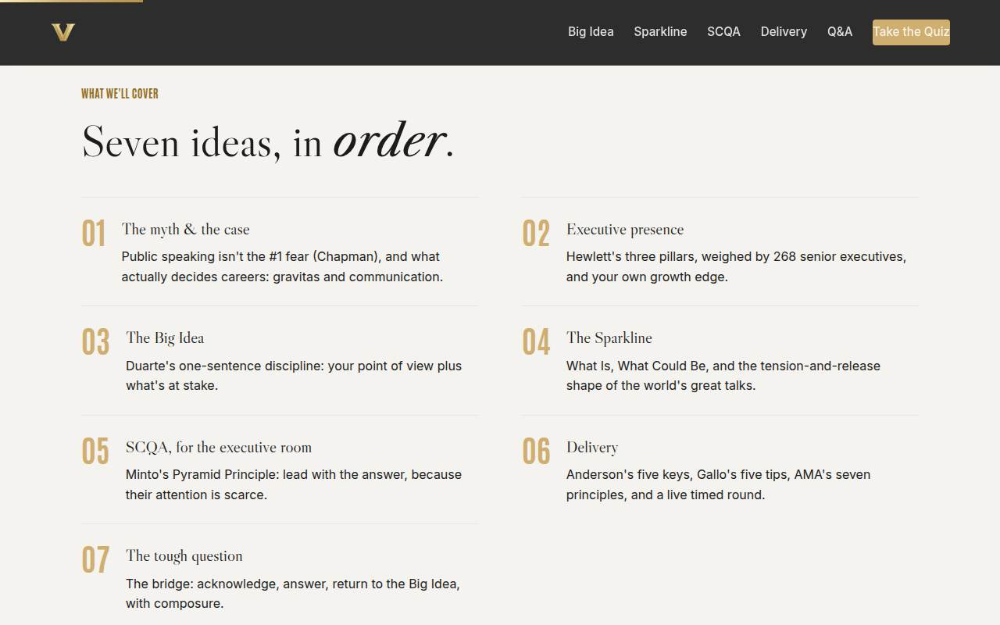
Agenda Full 1 min · Core skip
Show the arc once so learners can place each tool as it arrives: the case, presence, idea, structure, delivery, defense.
Say
“The arc is simple: first why this skill decides more than you think, then build — one idea, two structures — then deliver it live, then survive the questions.”
Do
- Walk the seven items in one breath each.
- Point out the shape: why it matters (01–02), build the talk (03–05), deliver and defend it (06–07).
Validate: None needed; this is orientation.
Watch for: Don't teach here; every concept has its own slide.
Transition: “Start with the numbers, because half of what you believe about public speaking is folklore.”
Core path: Core: skip entirely; the deck's structure carries it.
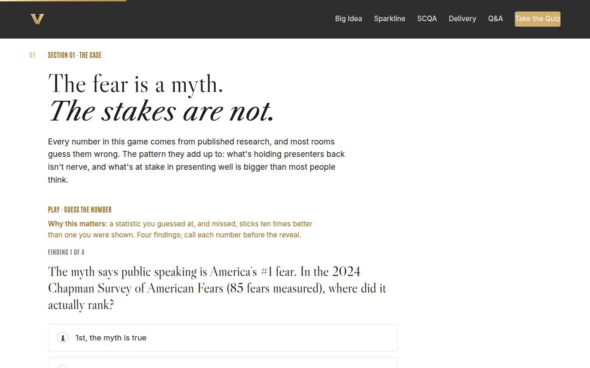
01 · The myth & the case Full 8 min · Core 5
Kill the fear myth with the Chapman data and establish the career stakes with Coqual and Deloitte — reframing presenting as a leadership skill, not a stage skill.
Say
“Everything you've heard about public speaking starts with 'it's America's number one fear.' It isn't — and it hasn't been for a while. In the 2024 Chapman Survey it ranked fifty-ninth of eighty-five, a few points below sharks. So if fear isn't what's separating forgettable presenters from the ones a room remembers, what is? That's what these four numbers are about — and I want you to guess each one before I show you.”
Do
- Frame the game: four research findings, guess each number before it's revealed. Missed guesses are the point; they stick.
- Run Guess the Number on devices, or as a room vote on the projector; call for guesses out loud before each reveal.
- Land the reframe after the reveals: if fear isn't the barrier, the barrier is structure and presence — and both are learnable, which is the whole session.
- Run the quick check, then the group discussion: best presentation you've watched — content or delivery?
- Collect one specific 'what made it land' from two or three voices; map each answer to a coming section out loud.
Ask
“If it's not fear holding most presenters back, what is it — in your own experience?”
Expect:
- No structure / rambling / no clear point
- Reading the slides, monotone delivery
- Not knowing the audience, wrong altitude for the room
Respond: Collect three or four and sort them out loud: 'Everything you just named is either structure or presence. Nobody said fear. The room just wrote today's agenda.'
Debrief: The fear is folklore; the stakes are not. Gravitas and communication decide leadership readiness, and a presentation is where both are on display.
Validate: Quick check correct; two or three specific 'what made it land' answers collected and mapped to sections.
Watch for: Someone whose fear IS real and who hears the myth-busting as dismissal. Honor it in one line — 'nerves are real; the data just says they're not the main barrier, and structure is the best treatment for both' — and keep moving.
Transition: “One sentence before the frameworks — the session's warning label.”
Core path: Core: Guess the Number as a fast room vote, quick check stays, discussion becomes one show of hands.
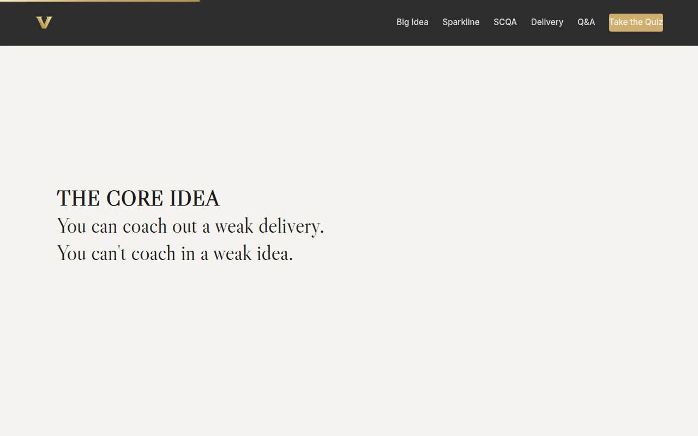
Manifesto Full 1 min · Core skip
One beat of stillness to lock Anderson's core insight before the tooling begins.
Say
“You can coach out a weak delivery. You can't coach in a weak idea.”
Do
- Let the line animate word by word. Say nothing until it finishes.
- Read it once, slowly, then advance.
Validate: None; this is pacing.
Watch for: The urge to talk over it. Don't.
Transition: “Which is why we build the idea first and polish the delivery after. But first — the presence the idea travels on.”
Core path: Core: skip; say the line yourself as you pass it.
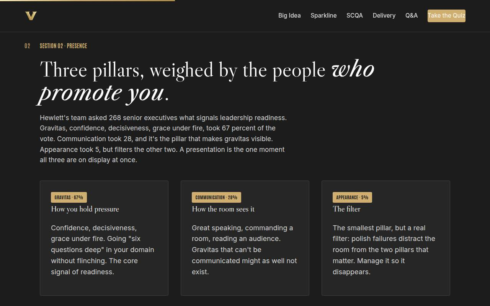
02 · Executive presence Full 8 min · Core 4
Install Hewlett's three-pillar model with its real weights, make it sight-readable in presentation moments, and get each learner a named growth edge for the capstone.
Say
“Hewlett's team asked 268 senior executives what actually signals leadership readiness. Sixty-seven percent said gravitas — confidence, decisiveness, grace under fire. Twenty-eight percent said communication. Five percent said appearance. Now the useful part: communication is how the room sees your gravitas. You can be brilliant under pressure in private and it counts for nothing in the meeting where careers are decided. That meeting is usually a presentation — which is why this is a leadership course wearing a public-speaking costume.”
Do
- Walk the three cards with the numbers attached: gravitas 67, communication 28, appearance 5 — and the twist, that communication is how the room SEES gravitas.
- Name the appearance paradox honestly: least important, yet blunders there are disproportionately costly. The move is making it a non-event.
- Send them to Spot the Pillar: five presentation scenes, name the pillar at work or at fault.
- Run the solo activity: rank your own three pillars, write one moment your weakest cost you something.
- Land the stake: executives put presence at roughly 26 percent of promotion decisions. Every presentation is quietly an interview.
Ask
“Gut call, ten seconds: which pillar is YOUR growth edge — and what did it cost you most recently?”
Expect:
- Communication confessions: rambling, burying the point
- Gravitas: crumbling under the hard question, over-apologizing
- A brave appearance answer, usually about virtual-meeting presence
Respond: No commentary on individual answers — just: 'Write the moment down. The capstone aims your rebuild at exactly that spot, and Sections 06 and 07 are the gym for the two big pillars.'
Debrief: Three pillars, real weights, and each of you has a target. Now we build the thing the pillars carry: the idea.
Validate: 4+ of 5 on the trainer for most of the room; every learner has a written weakest-pillar moment (it feeds the capstone).
Watch for: The model turning into a fixed-trait test ('I'm just not a gravitas person'). Keep it behavioral: gravitas is a set of trainable moves — composure under challenge, going deep without flinching — and Section 07 drills exactly that.
Transition: “And the idea has a brutal test: can you say it in one sentence?”
Core path: Core: cards with numbers in ninety seconds, trainer on devices, solo ranking in thirty silent seconds.
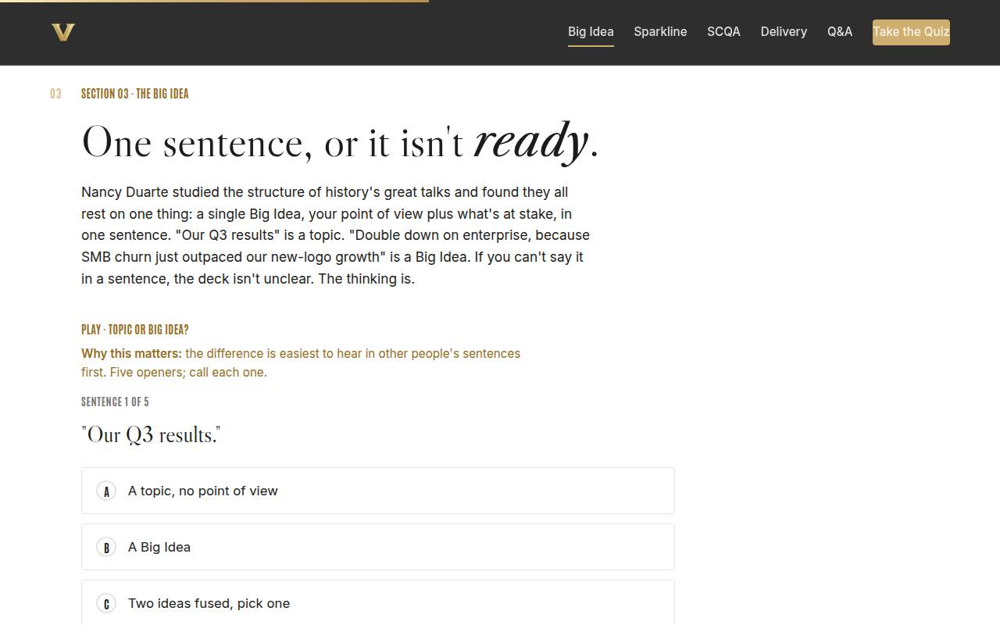
03 · The Big Idea Full 12 min · Core 9
Install Duarte's Big Idea discipline (point of view + stakes, one sentence) and get every learner a drafted Big Idea for their real presentation — the raw material for everything after.
Say
“Nancy Duarte studied the greatest talks ever given looking for their common architecture, and the foundation is always the same: one Big Idea. Not a topic — a point of view, plus what's at stake, in one sentence. 'Our Q3 results' commits to nothing; nobody can disagree with it, so nobody can care about it. 'We should double down on enterprise, because SMB churn just outpaced our new-logo growth' — that's a stance with a cost attached, and now the whole deck has a job: prove it. Here's the uncomfortable truth in the formula: if you can't compress your presentation into one sentence, the deck isn't unclear. The thinking is. Let's find out.”
Do
- Teach the formula with the contrast pair: 'Our Q3 results' is a topic; 'double down on enterprise because SMB churn outpaced new-logo growth' is a Big Idea.
- Send them to Topic or Big Idea: five sentences, call each one. The two-ideas-fused item teaches the most.
- Run the private drafter: point of view plus stakes, assembled on their own screens. Circulate and pressure-test two or three aloud: 'Is that one idea, or three?'
- Play the Duarte TEDxEast clip (8–10 minutes of 18) on the Full path — she applies the structure to MLK and Jobs, which sets up the next section.
- Run the group pressure-test from Go deeper: volunteers read theirs, the room applies the tests, rewrite the fuzziest one live.
Ask
“Why is it so hard to compress a presentation into one sentence — and what does it tell you when you can't?”
Expect:
- Because we start in the slides instead of the idea
- Because it's really three presentations wearing one deck
- Because committing to a stance feels risky; a topic is safe
Respond: Anchor the third one when it comes: 'Exactly — a topic can't be wrong, which is why it can't be interesting. The Big Idea takes the risk a presentation exists to take. If the stance is wrong, better to find out in one sentence than in slide forty.'
Debrief: One sentence, one idea, stakes attached. That sentence is your Q&A anchor, your opening line's raw material, and the test every slide must pass: does it serve the Big Idea?
Validate: 4+ of 5 on the trainer; every learner has a drafted Big Idea sentence on their screen or paper — this is the section's non-negotiable output.
Watch for: Drafts that are secretly topics ('an update on the program') or two ideas fused with 'and also.' The kind pressure-test: 'What do you want them to DO? What happens if they don't?' — the answers usually contain the real Big Idea.
Transition: “Now the idea needs a shape. Duarte found one in the greatest speeches in history — and it isn't a straight line.”
Core path: Core: contrast pair, trainer fast, drafter at full length (protect it), cut the video (assign as the week's watch), pressure-test one draft instead of three.
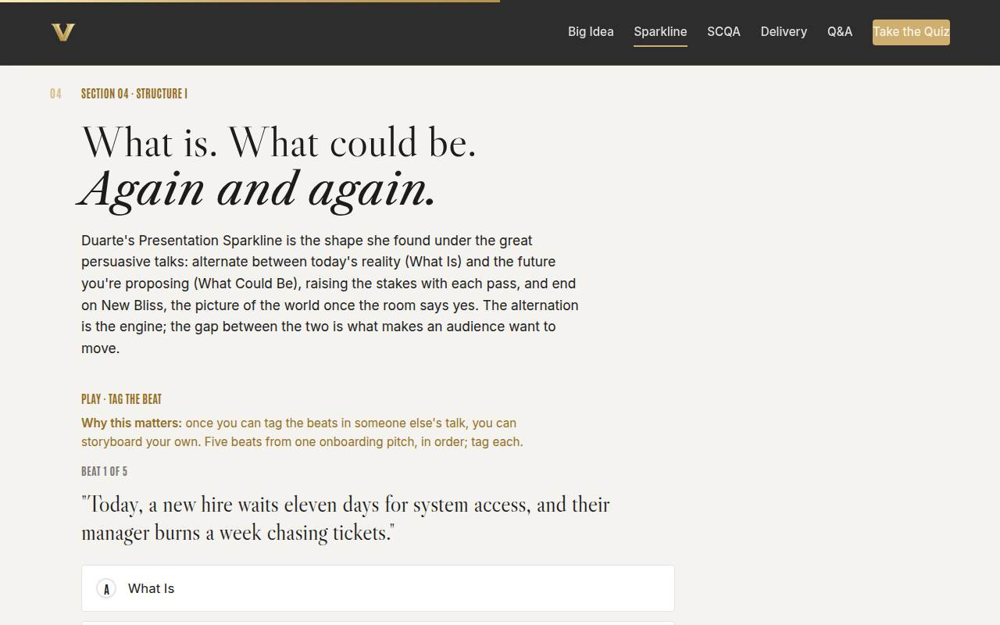
04 · The Sparkline Full 9 min · Core 6
Install Duarte's Sparkline shape (What Is ↔ What Could Be → New Bliss) as a storyboarding tool, and drill beat-recognition until learners can storyboard their own talk.
Say
“Duarte put the greatest speeches in history under a microscope and found the same shape: they alternate. Here's what is — the world as it stands, with its pain made concrete. Here's what could be. Back to what is — because the audience needs you to acknowledge the obstacle. Then a bigger what could be. And it ends on what she calls New Bliss: the picture of the world after the room says yes. The gap between reality and vision is the engine — every alternation widens it, and the audience crosses it for you. You don't build slides first. You storyboard these beats on sticky notes, and the deck comes last.”
Do
- Draw the shape as you teach it — literally sketch the alternating line on the whiteboard: reality, vision, reality, bigger vision, New Bliss.
- Name where it comes from: Duarte traced it under MLK's Dream speech (the broken promise against the dream) and Jobs' iPhone launch (2007's clunky phones against the device in his pocket).
- Send them to Tag the Beat: five beats from one onboarding pitch, tag each. The return-to-reality beat teaches the most.
- Walk the storyboard template on the gold card: beats on sticky notes BEFORE slides.
- Run the group storyboard: 3–4 beats for one member's Big Idea, read aloud as a paragraph.
Ask
“Why does RETURNING to 'What Is' after painting the vision make the talk stronger, not weaker?”
Expect:
- It's honest — the room knows the obstacles exist
- It builds credibility; pure optimism sounds like sales
- It creates the tension that makes the resolution land
Respond: All three are right; land the second hardest: 'An audience that hears you name the obstacle trusts your vision twice as much. The Sparkline isn't hype — it's honesty with a shape.'
Debrief: Beats before slides, alternation as the engine, and never end on an obstacle. That's the shape for hearts and minds. But there's a room where suspense is a liability…
Validate: 4+ of 5 on the trainer; each group has a 3–4 beat storyboard read aloud.
Watch for: Groups skipping the return to What Is — straight-line optimism reads as salesmanship. The return to reality after each vision is what builds credibility; say it explicitly when you see it missing.
Transition: “…the executive room. Different audience, opposite structure.”
Core path: Core: sketch the shape, trainer on devices, storyboard as a 3-minute solo exercise instead of groups. (Leadership-heavy Core rooms may compress this further in favor of full-depth SCQA.)
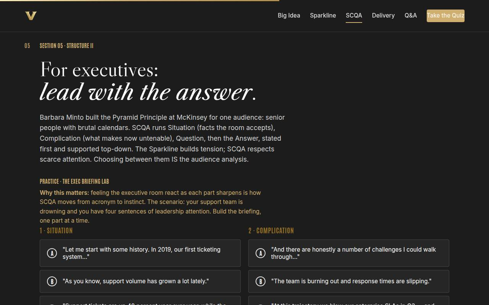
05 · SCQA, for the executive room Full 10 min · Core 7
Install Minto's SCQA with the answer-first discipline, let learners FEEL the exec room react in the graded lab, and make structure choice an audience-analysis decision.
Say
“Barbara Minto built the Pyramid Principle at McKinsey for one audience: senior people with brutal calendars. The structure is SCQA. Situation — the facts the room already accepts, and it's the shortest part; resist the history lesson. Complication — what makes right now untenable: a deadline, named stakes. Question — the exact question the room should now be asking. And the Answer — stated FIRST, specific, costed, dated. Duarte builds tension; Minto respects scarce attention. Neither is better; they're for different rooms, and choosing between them IS the audience analysis. You're about to brief a leadership room with four sentences of their attention. Build it well and watch what happens.”
Do
- Teach the four parts with their traps: Situation (shortest part — only what the room accepts), Complication (deadline + named stakes), Question (crystallize it), Answer (first, specific, costed, dated).
- Name the lineage: Barbara Minto built this at McKinsey, and consultants still run on it because executive attention is scarce.
- Send them to the Exec Briefing Lab: build the support-team briefing one part at a time, watch the room's reaction change. The weak-Answer option teaches the most.
- Run the quick check (ten minutes with the exec committee: SCQA).
- Run the conversion activity from Go deeper: re-cast the Sparkline storyboard as SCQA, read both aloud, debrief which the CFO would rather hear.
Ask
“McKinsey's own playbook optimizes for scarce executive attention. What's the risk of building suspense with a leadership audience that just wants the bottom line?”
Expect:
- They interrupt with 'what's the ask?' and you lose the thread
- They decide you don't know your own answer
- They mentally check out and read the deck ahead of you
Respond: All real, and the second is the killer: 'In an executive room, withholding the answer doesn't read as storytelling — it reads as not having one. Lead with it, and every minute after becomes evidence instead of preamble.'
Debrief: Answer first, Situation short, Complication with teeth. And the meta-skill: Sparkline for hearts and minds, SCQA for decisions — chosen deliberately, per room.
Validate: Most learners reach the strong reaction in the lab; the quick check lands; groups can articulate when each structure wins.
Watch for: The over-built Situation — most presenters' instinct is to give history lessons. Minto's rule: the Situation is only what the room already agrees is true, and it's the SHORTEST part. Also watch for hearing SCQA as 'the smart one' — it's the right tool for decisions, not universally superior.
Transition: “The talk is built. Now the part everyone thinks the course is about: saying it out loud.”
Core path: Core: parts with traps in two minutes, lab at full length (it IS the instruction), quick check stays, cut the conversion activity. (This section gets full depth in leadership-heavy Core rooms.)
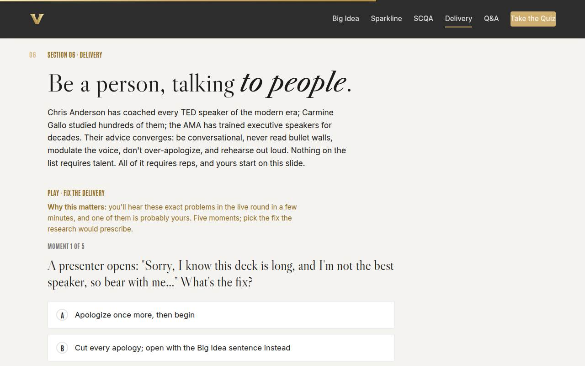
06 · Delivery (live round) Full 14 min · Core 10
Install the converged delivery playbook (Anderson, Gallo, AMA) and give every participant one timed, live speaking rep with exactly one piece of framework-anchored feedback — the session's centerpiece.
Say
“Chris Anderson has coached every TED speaker of the modern era. Carmine Gallo studied hundreds of the best. The AMA has trained executive speakers for decades. Strip their advice to what converges and you get five rules: talk like a person, not an orator. Never make the room read while you talk — one idea per slide, detail in the handout. Use your voice as the highlighter: change pace, and pause before the thing that matters. Never over-apologize — no one cares about your mistake but you, until you teach them to. And rehearse out loud, timed, because reading slides silently the night before is not rehearsal. None of this needs talent. All of it needs reps — and yours is in about four minutes.”
Do
- Teach the converged playbook fast: conversational register, no bullet walls, modulate the voice, never over-apologize, rehearse out loud.
- Send them to Fix the Delivery: five moments, pick the research-backed fix. It pre-loads the feedback vocabulary for the live round.
- Play the Anderson TED clip (8 min) on the Full path.
- Run the LIVE ROUND — the centerpiece: every participant delivers their Big Idea plus opening line, 60–90 seconds, timer visible, strictly enforced.
- Enforce the feedback rule: exactly ONE specific, actionable, framework-anchored note per speaker, starting with what worked. You model the first one.
- Keep momentum: no re-dos, no pile-ons, warm energy. Reps over perfection.
Ask
“After the round — to the room: what note did you hear someone ELSE get that you're stealing for yourself?”
Expect:
- The pause before the ask
- Cut the second sentence — the first one was the opener
- Say it, don't read it
Respond: Let three or four land, then name what happened: 'You just got fifteen coaching notes for the price of one. That's why the round is public — the Observer's seat teaches as much as the speaker's.'
Debrief: Everyone spoke, everyone got one true note, and nobody died — the Chapman survey was right. The note you got is your rehearsal focus; the note you stole is your bonus.
Validate: EVERY participant has spoken once and received one note; 4+ of 5 on the trainer. This section's completion is the session's objective 4 evidence.
Watch for: Feedback drift into pile-ons or vague praise ('that was great!'). Redirect to the frameworks: 'great pause before the ask' teaches; 'good job' doesn't. And watch the timer yourself — the round's discipline is half its value.
Transition: “One skill left, and it's the one that happens after your last slide: the pointed question.”
Core path: Core: playbook in ninety seconds, trainer stays, cut the video (assign), live round at 60 seconds flat per speaker. The live round is the floor — never cut it.
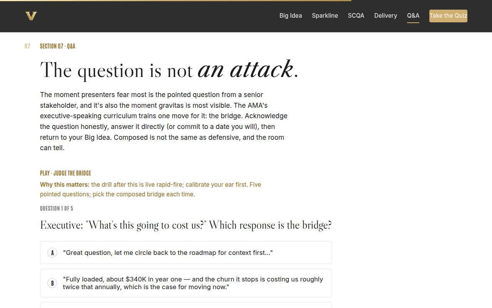
07 · The tough question Full 8 min · Core 5
Install the AMA bridge (acknowledge → answer → return) and drill composure under rapid fire — the gravitas gym.
Say
“The moment presenters fear most is the pointed question from the most senior person in the room — and it's also the moment gravitas is most visible, which makes it an opportunity wearing a threat costume. The move is the bridge, three beats: acknowledge the question honestly, including whatever is true in it. Answer it directly — or commit to a date you will: 'I don't want to guess; you'll have it Thursday.' Then return to your Big Idea: 'and the reason this matters for today's decision is…' The question is not an attack. It's the room taking your idea seriously enough to test it — and every question you bridge is another rep of your Big Idea landing.”
Do
- Teach the bridge with its three beats, and the honest deferral as a full member of the toolkit: 'I'll have it to you Thursday' plus the return.
- Send them to Judge the Bridge: five pointed questions, pick the composed response. The hostile-framing item teaches the most.
- Walk SHRM's six pre-speaking questions on the gold card: half the tough questions never come because you answered them in the talk.
- Run the rapid fire: you (or a deputized volunteer executive) fire 2–3 pointed questions at each presenter from the live round; presenter bridges.
- Call one thing per exchange: bridge landed, or where it wobbled.
Ask
“What's the actual question you're most afraid of getting on YOUR presentation — and what's the one-sentence answer?”
Expect:
- Cost questions, almost universally
- 'Why hasn't this been done already?'
- Someone admits they don't know their answer yet — the honest one
Respond: For the honest one: 'That fear is a gift — it just told you what to prepare. Write the three questions you're most afraid of and one-sentence answers before any leadership talk. You already know what they are; the fear is the tell.'
Debrief: Acknowledge, answer, return. Composed is not defensive, the deferral-with-a-date is strength, and the three feared questions get drafted before the talk, not survived during it.
Validate: 4+ of 5 on the trainer; each rapid-fire presenter completes at least one full bridge (acknowledge, answer, return).
Watch for: Answers that never return to the Big Idea — the most common wobble. And defensiveness dressed as confidence: 'with respect, that's unfair' is a flag, not a bridge. Model the concession move: 'what's true in that question is…'
Transition: “Toolkit complete. Quiz first, then the card that rebuilds your real talk.”
Core path: Core: bridge plus trainer stay, rapid fire compresses to two volunteers, SHRM card pointed at verbally.
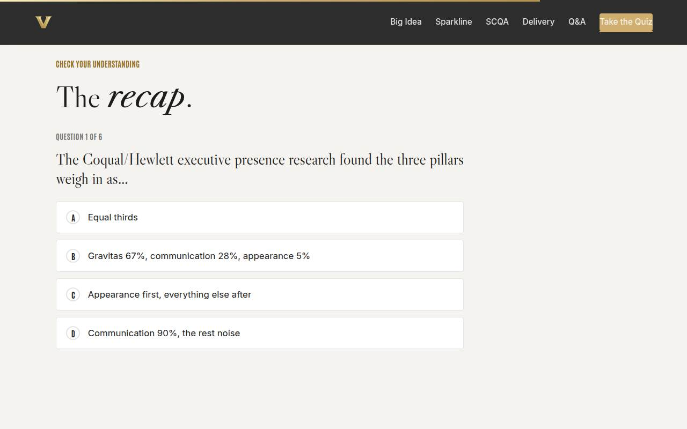
Recap quiz Full 4 min · Core 4
Score the session's knowledge against the six objectives before the capstone applies it (Kirkpatrick Level 2).
Say
“Six questions, one per big idea. This is the systems check before you rebuild the talk that leaves the room with you.”
Do
- Everyone takes it on their own device, all six questions.
- Ask for hands on 5-or-better; celebrate briefly.
- For any question the room visibly missed, do a 30-second reteach from the relevant slide, not a lecture.
Validate: Room mode at 5/6 or better. The quiz maps onto the objectives, so misses tell you exactly what to reteach.
Watch for: Racing. Frame it as a check before the rebuild, not a race.
Transition: “Now the only part of today that changes your next presentation.”
Core path: Core: keep at full length; this is the objectives' evidence.
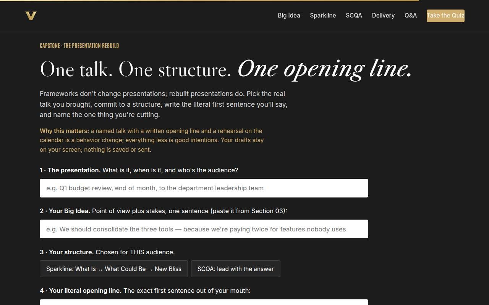
Capstone · The rebuild Full 6 min · Core 5
Convert the session into one rebuilt presentation: Big Idea, structure chosen for the room, literal opening line, one thing cut, rehearsal implied. The transfer artifact and the Level 3 seed.
Say
“Frameworks don't change presentations; rebuilt presentations do. Six decisions, and you've already drafted most of them: the talk — what, when, who. Your Big Idea, pasted from Section 03. The structure, chosen for THAT room, not your comfort. Your literal opening line — the exact first sentence, no apology, no warm-up; stakes or answer, sentence one. The thing you're cutting, because every rebuild is also a deletion. And the date. When you're done, say your structure and opening line out loud. A spoken opening line survives the walk to the podium; a silent one dies backstage.”
Do
- Frame it: frameworks don't change presentations; rebuilt presentations do. Six fields, most already drafted in earlier sections.
- Give quiet time; this is individual work. Circulate for stuck learners: the Big Idea from Section 03 pastes straight in.
- Watch field 4 — the literal opening line. Push past topic announcements: stakes or answer in the first sentence.
- Push the copy-button moment, then the public commitment: structure and opening line, out loud or in chat.
- Close the loop: rehearse out loud once with one honest human before the talk; write one line of evidence after it.
Ask
“What's most likely to make you skip the rebuild — and what's your plan for that obstacle?”
Expect:
- No time; the deck already exists
- My team expects the old format
- The rehearsal step feels awkward
Respond: Existing deck: 'rebuild the OPENING and the structure of the first five slides; that's 80 percent of the effect for 20 percent of the work.' Format expectations: 'nobody has ever complained that a presentation was too clear.' Rehearsal: 'one run, phone camera, alone. Watch it once. You'll never skip it again.'
Debrief: One talk, one structure, one opening line, one deletion, one date. Your next presentation is about to be the before-and-after everyone else notices.
Validate: Every learner builds a card (all six fields) and states structure plus opening line aloud or in chat. The card plus the 7-day pulse plus the 30/60/90 structure check is the evidence chain.
Watch for: Opening lines that are secretly apologies or agenda announcements. The test from the cheat sheet: does the first sentence deliver stakes or the answer? Also vague talks ('some upcoming meeting') — push to a named, dated presentation.
Transition: “Reference shelf in one breath, and then the send-off.”
Core path: Core: protect at full length minus the read-alouds; never cut the capstone.
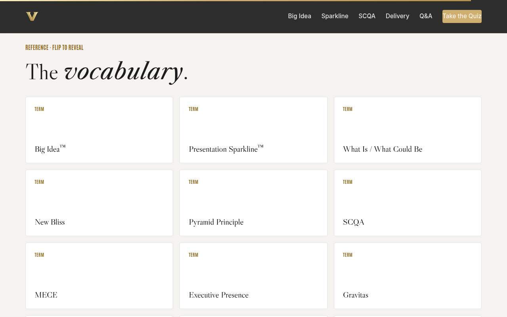
Glossary Full 1 min · Core skip
Signpost the reference layer; it lives here for after the session.
Say
“Every term from today lives here as flip cards — including MECE, for the next time a consultant uses it at you.”
Do
- Flip one card on the projector (MECE is a good pick; it gets a smile and reteaches the Pyramid).
- Tell them it's all here whenever they need the vocabulary back.
Validate: None; reference material.
Watch for: Don't tour all thirteen cards; one flip makes the point.
Transition: “Last slide. One talk left — yours.”
Core path: Core: skip; point at it verbally from the closing slide.
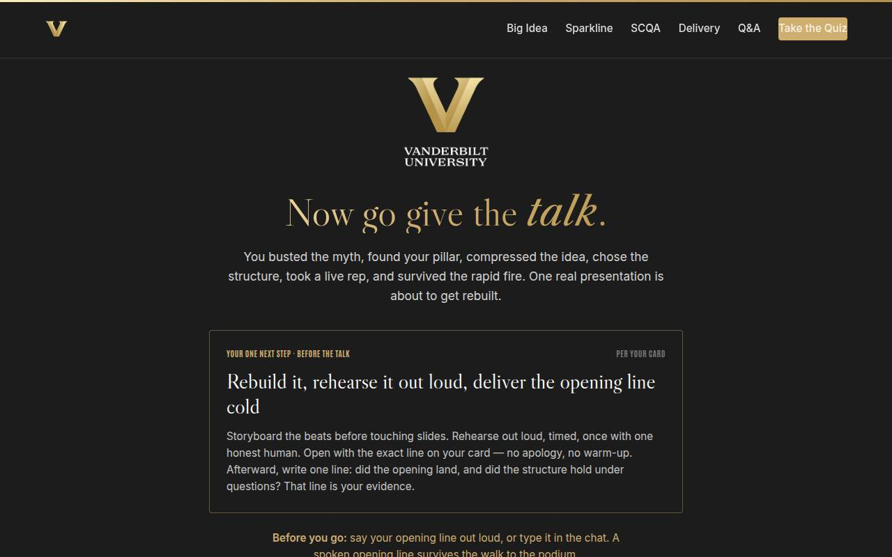
Closing · commitment Full 3 min · Core 2
Convert rebuild cards into spoken commitments, capture the Level 1 reaction check, and point at the follow-up chain.
Say
“The whole session in one breath: the fear is folklore, presence decides more than you think, one sentence or it isn't ready, alternate reality and vision for hearts and minds, lead with the answer for the executive room, deliver like a person talking to people, and bridge every hard question back to the idea. You have a card with the opening line written. Before you go — say it. Out loud. Right now.”
Do
- Read the featured card: rebuild it, rehearse out loud once with one honest human, open with the exact line on the card.
- Run the fist-to-five (Level 1): 'On a fist to five, how ready do you feel to deliver your rebuilt talk?' Scan and note the number for your session log.
- Run the commitment round, popcorn style: structure and opening line, out loud or in chat. This doubles as each person's second speaking rep of the day.
- Point at the cheat sheet and rebuild worksheet buttons, and the two talks (Duarte, Anderson) as the week's watch list.
- Tell them the 7-day pulse is coming, then land the last line and stop on time.
Ask
“Around the room, one line each: your structure, and your literal opening line.”
Expect:
- 'SCQA — Last quarter we lost eleven new hires in their first 90 days; today I'm asking for the fix.'
- 'Sparkline — Every Monday, three of your analysts spend the morning rebuilding the same report.'
- Someone's line is still a topic announcement
Respond: Thank each one, no commentary — except the topic announcement, warmly: 'You've got the what; give me the why-now. What breaks if they don't act?' The room usually finishes the line with them.
Debrief: The session's success metric isn't in this room; it's the 7-day pulse: did the rebuilt talk happen, and did anyone react to the opening line?
Validate: Fist-to-five mostly 3+ (Level 1); a majority state structure plus opening line aloud or in chat. Count both; with the pulse and the structure check, that's your evidence chain.
Watch for: Cards that quietly skipped the opening line. The commitment round catches them: no line, no commitment; help them draft one on the spot from their Big Idea.
Transition: “Go give the talk. And when someone comments on your opening line — and someone will — write it down. That's your evidence.”
Core path: Core: fist-to-five plus a fast commitment round; the ending survives every cut.
Generated from facilitator/notes.json. The on-screen facilitator edition lives at ./ alongside this guide.